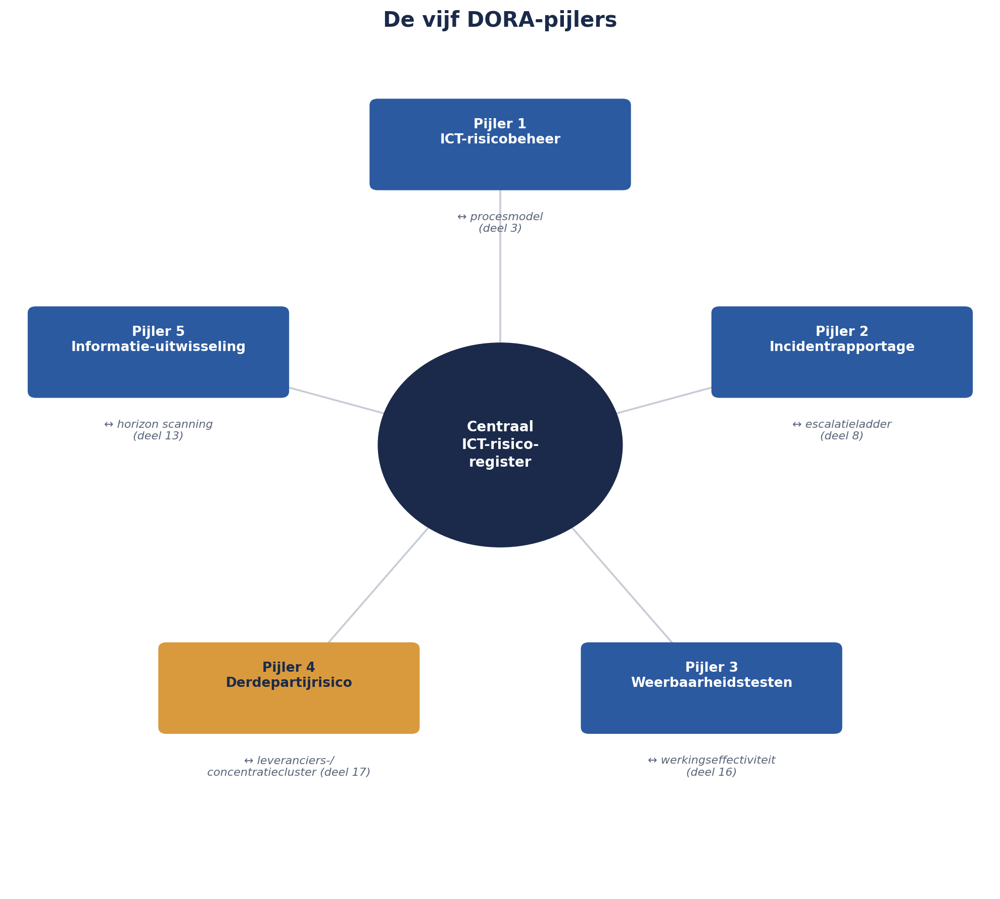

Cursus Risicomanagement · Niveau 2 (M_o_R 4/IRM) · Deel 18 van 30
Cyberrisico stopt niet bij je eigen grens.
Om 07:42 op een dinsdagochtend meldt een medewerker van de servicedesk een phishingmail die zich voordoet als "Meridiaan IT-Beheer" — gericht precies op het Werkgeversportaal dat over zes weken live moet gaan. Er gebeurt uiteindelijk niets, maar de near-miss legt een blinde vlek bloot: nergens in het risico-instrumentarium van het Mutatieplatform-programma stond iets dat op dit scenario leek. Dit deel behandelt waarom IT- en cyberrisico, als enige aanpalende onderwerp in deze cursus, een eigen deel krijgt: de CRISC-domeinen als oriëntatiekader, en de vijf pijlers van de DORA — de Europese verordening die sinds 17 januari 2025 rechtstreeks voor Meridiaan geldt.
5secties
±1uleestijd + werkboek
3controlevragen
5DORA-pijlers §18.3
Positionering. Deze cursus is een voorbereiding op M_o_R 4 Practitioner (PeopleCert) en het IRM International Certificate in ERM (Institute of Risk Management), en uitdrukkelijk geen vervanging van het officiële examenmateriaal van die instanties. Controleer bij inschrijving altijd het actuele aanbod, de kosten en de examenvorm bij PeopleCert, het IRM of uw opleider zelf; informatie in dit materiaal is geverifieerd in augustus 2026 en kan wijzigen.
Niveau 2: 11 M_o_R 4: van project naar de hele onderneming → 12 Risicobereidheid, -capaciteit en toleranties → 13 Identificatie op programmaschaal → 14 Kwantitatief I: verwachtingswaarde, beslisbomen, drie-puntsschattingen → 15 Kwantitatief II: Monte Carlo-simulatie → 16 Bow-tie-analyse: oorzaken, gevolgen en barrières die je test → 17 Geaggregeerd risico en risico in verschillende leveringsmodellen → 18 IT- en cyberrisico (hier) → 19 Rapportage en besluitvorming → 20 Risicocultuur en gedrag → 21 De risicofunctie inrichten → 22 Examentraining en capstone: de geaggregeerde verdediging
01
Bijna
⏱ 6 min
Om 07:42 op een dinsdagochtend meldt een medewerker van de servicedesk iets ongewoons: een e-mail, zogenaamd van "Meridiaan IT-Beheer", die werkgevers vraagt hun inloggegevens voor het nieuwe Werkgeversportaal (Project 1) te "herbevestigen" via een link die niet naar het echte domein van Meridiaan verwijst. Binnen een uur is duidelijk: dit is een phishingcampagne, gericht op precies het portaal dat over zes weken live moet gaan.
Er gebeurt uiteindelijk niets — geen enkele werkgever heeft op de link geklikt, voor zover bekend. Maar Sanne Bakhuis stelt zichzelf een ongemakkelijke vraag: als dit wél was gelukt, wáár in het risico-instrumentarium van het Mutatieplatform-programma had dit moeten staan? Het antwoord is: nergens. Geen van de vijf projectregisters, geen van de acht programmarisico's uit deel 13, bevatte iets dat op dit scenario leek.
02
Waarom dit een eigen deel krijgt
⏱ 10 min
Elk ander aanpalend onderwerp in deze cursus — agile levering, portfoliovraagstukken — is bewust niet als eigen deel behandeld, om overlap met de zustercursussen te vermijden (zie deel 17, paragraaf 17.5). IT- en cyberrisico is de uitzondering, om twee redenen die specifiek voor deze cursus gelden.
Ten eerste is het Mutatieplatform-programma zelf, in de kern, een digitaal product: vijf projecten die samen een keten van systemen bouwen waarlangs gevoelige persoonsgegevens en pensioenaanspraken stromen. Digitale afhankelijkheid is hier niet één risicocategorie tussen vele — het is de laag waarop bijna elk ander risico uit dit niveau uiteindelijk draait.
Ten tweede, en dwingender: sinds 17 januari 2025 gelden voor Meridiaan als verzekeraar de eisen van de DORA, de Digital Operational Resilience Act — een Europese verordening die rechtstreeks werkt, zonder nationale omzetting, en die specifieke, afdwingbare verplichtingen oplegt. Dit is geen vrijblijvend "goed om te weten"-onderwerp; het is een wettelijk kader waarbinnen Meridiaan moet opereren, met DNB en AFM als toezichthouders op de naleving.
Kernzin 12 van de cursus
Cyberrisico stopt niet bij de grens van je eigen systeem — het loopt door tot bij elke partij waarmee dat systeem praat.
03
CRISC: een aanpalende oriëntatie
⏱ 10 min
Deze cursus ankert, zoals in deel 1 (niveau 1) vastgesteld, niet op CRISC als examenlijn — M_o_R en IRM blijven de hoofdlijn van niveau 2. Maar CRISC's domeinindeling is een nuttig oriëntatiekader om IT-risico systematisch te doordenken, en wordt daarom hier kort behandeld, niet als examenvoorbereiding maar als raamwerk.
Domein
Aandeel
Kernvraag
Governance
26%
Is IT-risicomanagement verankerd in de bredere governance van de organisatie?
IT Risk Assessment
22%
Hoe identificeer en analyseer je IT-specifieke risico's?
Risk Response and Reporting
32%
Welke respons past bij IT-risico, en hoe rapporteer je erover?
IT and Security
20%
Welke technische en organisatorische beheersmaatregelen zijn relevant?
Merk op dat dit dezelfde vier bewegingen zijn die door de hele cursus terugkeren (context/governance, identificeren, respons, monitoren) — opnieuw een bevestiging van het patroon uit deel 2 en 3 (niveau 1): elke serieuze standaard herkent dezelfde onderliggende cyclus, toegepast op een specifiek domein.
04
De DORA-mechaniek
⏱ 18 min
Pijler 1 — ICT-risicobeheer
Een verplicht raamwerk waarin de organisatie ICT-risico's identificeert, beoordeelt en beheerst — in essentie dezelfde cyclus als deel 3 (niveau 1), nu met specifieke ICT-vereisten en bestuurlijke betrokkenheid als expliciete eis: het bestuur moet aantoonbaar betrokken zijn, niet alleen de IT-afdeling.
Pijler 2 — ICT-incidentrapportage
Incidenten die de vertrouwelijkheid, integriteit of beschikbaarheid van systemen raken, moeten geclassificeerd en, bij "major"-classificatie, binnen strikte termijnen aan de toezichthouder gemeld worden — een eerste melding, een tussentijdse update, een eindrapport. Dit is een striktere, wettelijk afdwingbare versie van de escalatieladder uit deel 8 (niveau 1): waar een gewone tolerantie-overschrijding intern escaleert, escaleert een major ICT-incident extern, naar DNB/AFM, binnen vaste klokken.
Pijler 3 — Testen van digitale operationele weerbaarheid
Periodieke, verplichte tests — voor grotere, "significante" entiteiten inclusief threat-led penetration testing (TLPT), waarbij een onafhankelijke partij een realistische aanval simuleert. Dit is exact de werkingseffectiviteitstoets uit deel 16, nu wettelijk verplicht in plaats van optioneel.
Pijler 4 — Beheer van ICT-risico's bij derde partijen
Een verplicht register van alle ICT-derdepartijovereenkomsten — welke leveranciers, welke diensten, welke kriticiteit. Dit formaliseert precies het cluster "externe leveranciersafhankelijkheid" dat in deel 17 werd blootgelegd: wat daar een analytische ontdekking was, is hier een wettelijke verplichting.
Pijler 5 — Informatie-uitwisseling
Vrijwillige of verplichte uitwisseling van dreigingsinformatie met de sector — een collectieve, buiten de eigen organisatie reikende vorm van horizon scanning (deel 13).

Figuur 18-1 — de vijf DORA-pijlers als een cirkel rond een centraal ICT-risicoregister, met bij elke pijler een verwijzing naar het overeenkomstige, al eerder in de cursus behandelde instrument (context/proces deel 3, escalatieladder deel 8, werkingseffectiviteit deel 16, leveranciersregister deel 13/17, horizon scanning deel 13).
Controlevraag
Uit Werkboek deel 18, Opdracht 18.1 — Welke DORA-pijler?
1Vier situaties: (a) Meridiaan houdt een register bij van alle externe ICT-leveranciers met een kriticiteitsbeoordeling. (b) Een onafhankelijke, realistische aanvalssimulatie vindt plaats op de systemen van Meridiaan. (c) Een storing bij de Verwerkingsengine treft de beschikbaarheid voor alle werkgevers gedurende vier uur en wordt binnen de voorgeschreven termijn aan DNB gemeld. (d) Meridiaan deelt, samen met andere pensioenuitvoerders, informatie over een nieuwe phishingtechniek in de sector. Welke DORA-pijler hoort bij elke situatie?Toon antwoord
a. Pijler 4 — beheer van ICT-risico's bij derde partijen. b. Pijler 3 — testen van digitale operationele weerbaarheid (dit beschrijft een TLPT-achtige test). c. Pijler 2 — ICT-incidentrapportage. d. Pijler 5 — informatie-uitwisseling. Vier van de vijf pijlers zijn hier vertegenwoordigd; alleen pijler 1 (ICT-risicobeheer, het onderliggende raamwerk zelf) komt niet apart terug — dat is precies omdat pijler 1 de basis is waarop de andere vier rusten, niet een aparte, afzonderlijke activiteit.
05
Sanne's near-miss, verwerkt
⏱ 18 min
Terug naar de phishingcampagne uit §18.0. Sanne behandelt dit volgens het instrumentarium van deze cursus, aangevuld met de DORA-eisen.
Classificatie. Omdat er geen daadwerkelijke inbreuk heeft plaatsgevonden (geen werkgever heeft gegevens prijsgegeven), haalt dit incident de DORA-drempel voor verplichte externe melding niet. Het wordt wel intern vastgelegd — een belangrijk onderscheid: niet elk cyberincident is meldingsplichtig, maar elk incident verdient een interne beoordeling of het dat wél is.
Oorzaakanalyse via bow-tie (deel 16). De centrale gebeurtenis: "werkgever geeft inloggegevens prijs via phishing." Dreigingen: onvoldoende bewustzijn bij werkgevers, geen multi-factor-authenticatie op het portaal, geen geautomatiseerde detectie van verdachte domeinnaam-varianten. Barrières die worden toegevoegd: verplichte MFA vóór livegang (nu met hoge prioriteit, vooruitlopend op de geplande livegangdatum), een bewustwordingsmail naar alle werkgevers, en een domeinmonitoringdienst die vergelijkbare phishingdomeinen vroegtijdig signaleert.
Opname in het ICT-derdepartijregister (DORA-pijler 4). De domeinmonitoringdienst is zelf een nieuwe externe partij — en wordt dus, volgens de DORA-vereiste, opgenomen in het derdepartijregister met een eigen kriticiteitsbeoordeling.
Toevoeging aan het programmaregister als nieuw risico, met een risicozin volgens het format uit deel 1 (niveau 1):
Nieuwe registerregel
Doordat het Werkgeversportaal nog geen multi-factor-authenticatie kent en werkgevers nog niet zijn voorgelicht over phishingherkenning, kan een toekomstige phishingcampagne wél slagen, waardoor onbevoegde toegang tot werkgeversgegevens kan ontstaan met een verplichte DORA-melding aan DNB/AFM tot gevolg.
Dit voorbeeld laat zien dat IT- en cyberrisico geen apart universum is met eigen regels — het is hetzelfde vak, toegepast op een domein met eigen, wettelijk verzwaarde eisen aan tempo en transparantie.
Controlevragen
Uit Werkboek deel 18, Opdracht 18.2 en 18.3 — meldingsplichtig of niet, en een bow-tie bouwen
1Vier incidenten: (a) een phishingmail wordt door honderden werkgevers ontvangen, maar niemand klikt. (b) Een technische storing legt het Werkgeversportaal drie uur plat tijdens kantooruren. (c) Een medewerker verliest een niet-versleutelde laptop met een lokale kopie van testdata (geen echte deelnemersgegevens). (d) Een onbevoegde partij krijgt toegang tot een deel van de productieomgeving met echte deelnemersgegevens. Interne aantekening, of kandidaat voor externe DORA-melding?Toon antwoord
a. Interne aantekening, zoals de near-miss in §18.4 — geen daadwerkelijke inbreuk. b. Kandidaat voor externe melding — een verstoring van beschikbaarheid, potentieel boven de classificatiedrempel, afhankelijk van de exacte impact-criteria; in ieder geval een grondige interne beoordeling vereist. c. Waarschijnlijk interne aantekening met verhoogde waakzaamheid, omdat het om testdata gaat zonder echte deelnemersgegevens — maar wel een signaal dat het beleid rond het meenemen van data op apparatuur moet worden herzien. d. Zeer waarschijnlijk kandidaat voor externe melding — een feitelijke inbreuk op vertrouwelijkheid van echte deelnemersgegevens, het soort scenario waarvoor de DORA-meldketen bestaat. De scherpe classificatiecriteria zelf zijn gedetailleerd technisch-juridisch werk dat buiten deze cursus valt — het punt hier is de vaardigheid om, bij twijfel, altijd de interne beoordelingsstap te zetten in plaats van zelf te besluiten "dit stelt vast niets voor".
2Bouw, naar het voorbeeld van deel 16, een bow-tie voor een IT- of cyberrisico met minstens twee dreigingen en twee gevolgen — bijvoorbeeld de phishingcasus uit dit deel.Toon antwoord
Geen vast antwoord — toepassingsopdracht. Gebruik de uitwerking uit §18.4 als referentie: centrale gebeurtenis "werkgever geeft inloggegevens prijs via phishing", dreigingen (onvoldoende bewustzijn, geen MFA, geen domeinmonitoring) elk met een eigen barrière, gevolgen (onbevoegde toegang, DORA-meldingsplicht, reputatieschade) elk met een eigen barrière. Controleer bij nakijken: zijn de barrières concreet en toewijsbaar aan een actiehouder (deel 7, niveau 1), niet alleen "meer bewustzijn creëren" in algemene termen?
Samenvattend: IT- en cyberrisico krijgt een eigen deel omdat het Mutatieplatform in de kern een digitaal product is, en omdat DORA sinds 17 januari 2025 rechtstreeks werkende, afdwingbare verplichtingen oplegt aan Meridiaan als verzekeraar (Kernzin 12). CRISC's vier domeinen worden als oriëntatiekader gebruikt, niet als examenlijn. DORA's vijf pijlers corresponderen elk met een instrument dat deze cursus al eerder behandelde, nu met wettelijke verzwaring. En Sanne's near-miss laat het volledige patroon zien: classificeren, oorzaakanalyse via bow-tie, opname van nieuwe derde partijen in het verplichte register, en vastlegging als volwaardig risico met risicozin.
Verder naar deel 19
Deel 19 (twee dagdelen) verlaat de individuele risico-instrumenten voor het grotere geheel: hoe je over al deze risico's — kwalitatief, kwantitatief, geaggregeerd, IT-gerelateerd — rapporteert aan een bestuur op een manier die daadwerkelijk tot een besluit leidt, inclusief een live oefening waarin dezelfde risico's aan drie verschillende gremia worden gepresenteerd.